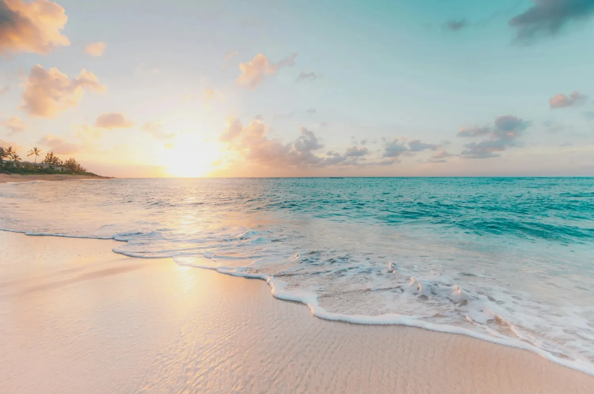
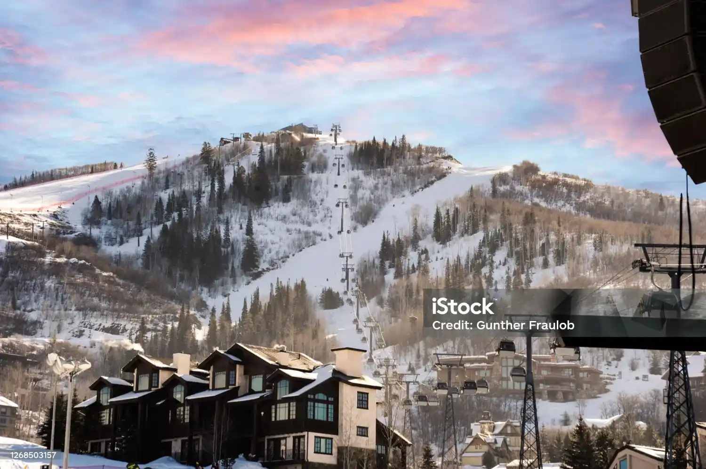

The above breathtaking image captures the crystal-clear turquoise waters and golden coastline of Bali’s southern beaches. This destination is known for its serene landscapes, swaying palm trees, and peaceful sunsets that offer travelers a perfect escape from their daily routine.
Tourists visiting Bali often start their journey exploring the scenic beaches before moving towards lush green rice terraces and cultural temples that reflect the island’s rich heritage.
Bali is not just about relaxing by the beach. Adventure enthusiasts can enjoy:
The island is home to beautiful temples such as Tanah Lot and Uluwatu, where visitors can experience traditional Balinese dance performances during sunset.
Bali's culture is deeply rooted in spirituality, art, and centuries-old traditions. Visitors can explore local villages, witness temple ceremonies, and enjoy authentic Balinese music and dance performances.

Beyond its famous beaches, Bali offers breathtaking waterfalls, lush rice terraces, luxury resorts, vibrant nightlife, and rich cultural traditions that attract millions of visitors every year.

One of Bali's most iconic landscapes featuring green terraced fields and scenic viewpoints.

A spectacular sea temple famous for sunset views and traditional Balinese architecture.

Hidden among tropical forests, this waterfall is a paradise for nature lovers.
Experience the beauty of Bali through this travel video. Discover beaches, temples, waterfalls, local cuisine, and breathtaking landscapes.

Travel Journalist exploring global destinations.